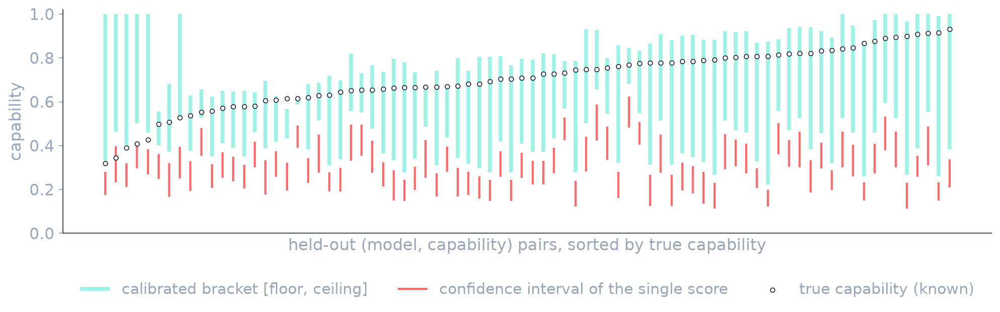

Measuring what an AI model can do, not just what it chooses to show under a test.
A calibrated [floor, ceiling] interval for capability, for when a single benchmark number can't be trusted.
This is eval-awareness (sandbagging): the measured score understates what the model will actually do once it's deployed and pushed.
"Below the threshold, looks safe, ship it" is a gate. If the score is low because the model hid, the gate opens on a risk no one measured.
All values on the next slides are made up to illustrate the method, not from any real model or evaluation.
The true capability lives inside the range, and the ceiling is what a deployment decision has to respect.
You don't request the capability; you condition or train the model with a handful of demonstrations until it stops holding back, exactly what a real attacker can do.
Read it as [deployed‑as‑is, reachable‑under‑access], the honesty is in spanning both and naming the tier.
Known truth is needed only once, at calibration. After that, the same learned margin applies to every new model and capability you evaluate.
EvalBracket answers each: a margin calibrated on known truth restores the guarantee, and the abstain rule turns silent elicitation failure into a loud “can't tell.”
We train a small lock on an open model, compute the bracket without the password, then check: did it contain the known dot?

Each dot is a known true capability; red is the confidence interval around the single score (sampling error only, so it can't see the sandbagging gap). Leave‑one‑model‑out, 11 password‑locked models.
Elicitation is unbounded, so a point is easier to report than a defensible range. EvalBracket turns that same effort into a calibrated [floor, ceiling], and says how much to trust it.
A calibrated range states what a model can and cannot be trusted to do, and admits when it doesn't know.
EvalBracket
Ratnaditya Jonnalagadda